Regression comparison
Download resultsAggregation weights
\widehat y(x)=y_{\rm mean}+y_{\rm std}\sum_{h=1}^{H}\beta_h\mu_h(x)Coefficients can be negative and need not sum to one. Intervals describe coefficient uncertainty; the dashed reference is DE’s fixed 1/H weight.
BDKN
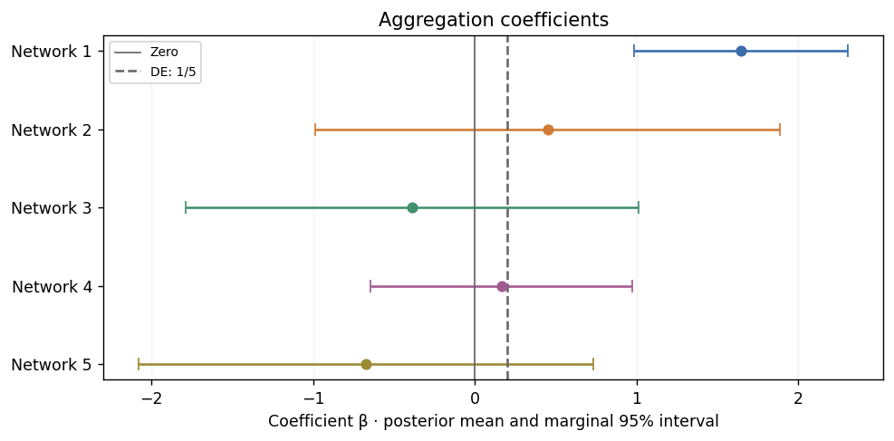


Each density panel uses its own X range for readability; coefficient intervals above share a common axis. Prior reference conditions on fitted noise. Contribution shares use held-out inputs; test targets are used only for scoring.
| Network | β mean | 95% low | 95% high | P(β > 0) | Contribution share | Test RMSE | Test NLL |
|---|---|---|---|---|---|---|---|
| 1 | 1.64634 | 0.98409 | 2.30859 | 0.99998 | 0.48029 | 62.55445 | 11.62638 |
| 2 | 0.45083 | -0.98652 | 1.88817 | 0.73980 | 0.12782 | 62.95527 | 16.43550 |
| 3 | -0.38688 | -1.78622 | 1.01246 | 0.28528 | 0.12531 | 62.36362 | 10.38803 |
| 4 | 0.16634 | -0.64366 | 0.97633 | 0.66352 | 0.05730 | 60.95023 | 43.23640 |
| 5 | -0.67137 | -2.07639 | 0.73364 | 0.16539 | 0.20927 | 62.64652 | 21.54277 |
Functional repulsion · BDKN
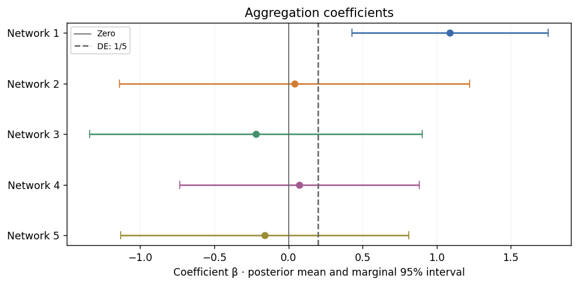
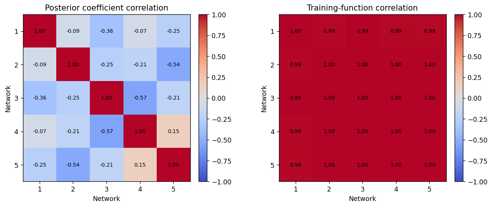
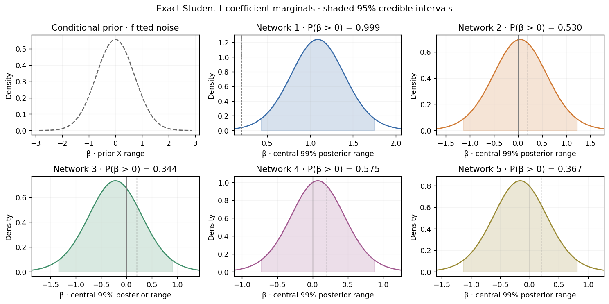
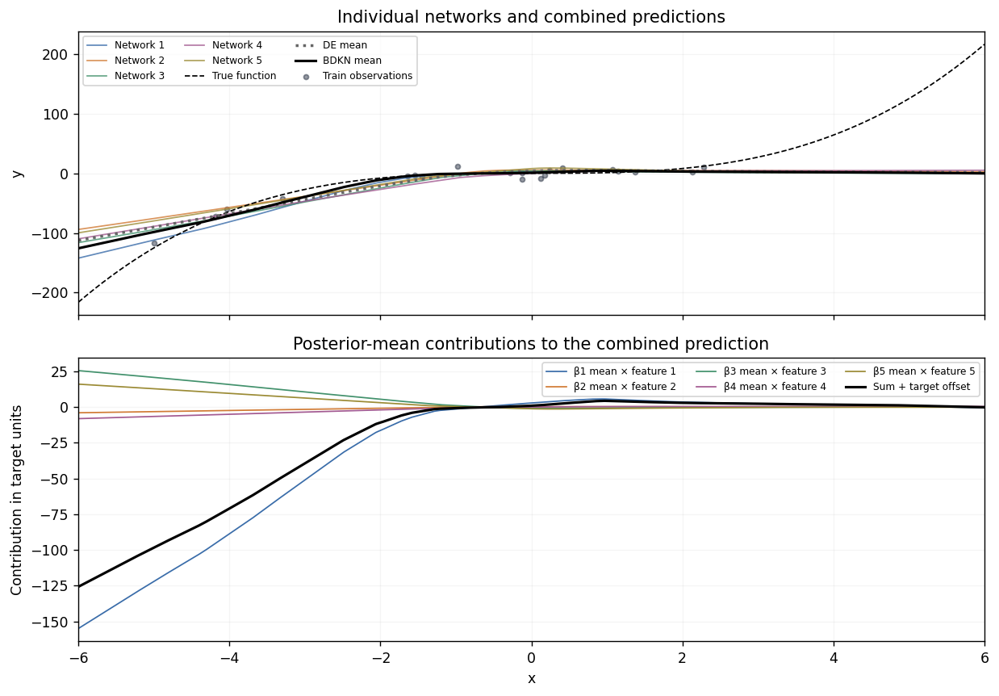
Each density panel uses its own X range for readability; coefficient intervals above share a common axis. Prior reference conditions on fitted noise. Contribution shares use held-out inputs; test targets are used only for scoring.
| Network | β mean | 95% low | 95% high | P(β > 0) | Contribution share | Test RMSE | Test NLL |
|---|---|---|---|---|---|---|---|
| 1 | 1.08971 | 0.42713 | 1.75230 | 0.99868 | 0.71568 | 60.38030 | 10.43834 |
| 2 | 0.04299 | -1.13804 | 1.22402 | 0.52989 | 0.02253 | 62.72588 | 16.66596 |
| 3 | -0.21895 | -1.33909 | 0.90118 | 0.34390 | 0.13165 | 62.31350 | 10.26238 |
| 4 | 0.07421 | -0.73274 | 0.88116 | 0.57510 | 0.04597 | 60.79947 | 40.15951 |
| 5 | -0.16016 | -1.13146 | 0.81114 | 0.36724 | 0.08417 | 63.10166 | 21.48062 |
Weight repulsion · BDKN
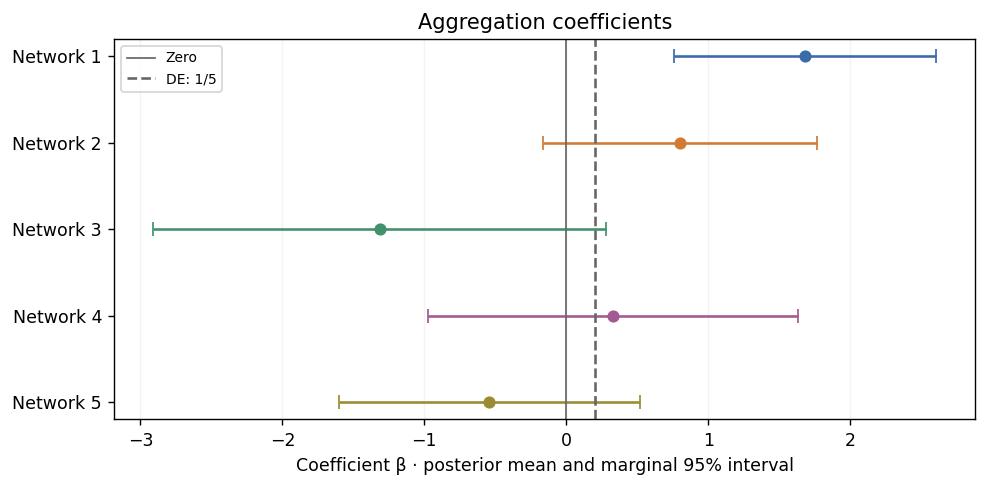
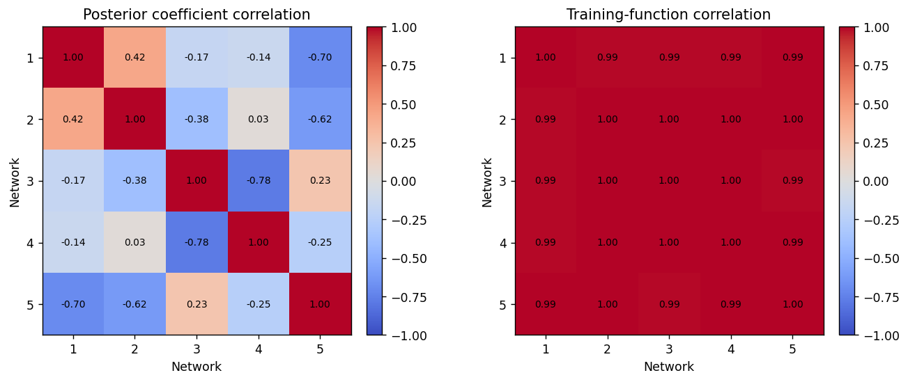
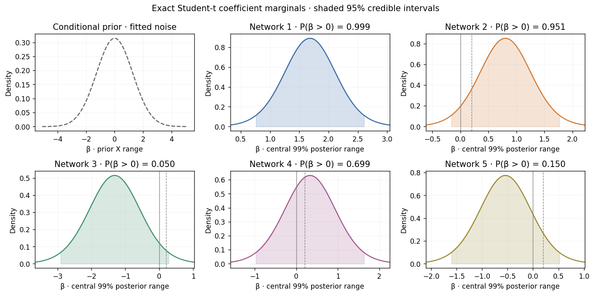
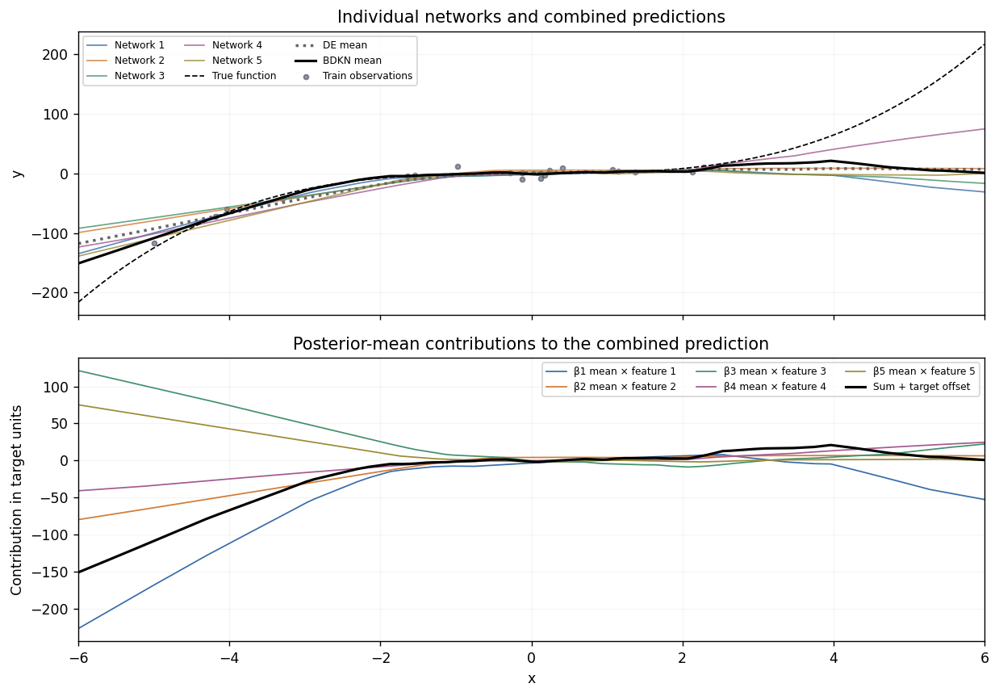
Each density panel uses its own X range for readability; coefficient intervals above share a common axis. Prior reference conditions on fitted noise. Contribution shares use held-out inputs; test targets are used only for scoring.
| Network | β mean | 95% low | 95% high | P(β > 0) | Contribution share | Test RMSE | Test NLL |
|---|---|---|---|---|---|---|---|
| 1 | 1.68371 | 0.76056 | 2.60686 | 0.99944 | 0.36987 | 68.56958 | 13.93219 |
| 2 | 0.80320 | -0.16253 | 1.76893 | 0.95093 | 0.15867 | 60.08323 | 15.14864 |
| 3 | -1.31572 | -2.90871 | 0.27727 | 0.05017 | 0.23892 | 68.13899 | 14.55363 |
| 4 | 0.33081 | -0.97157 | 1.63320 | 0.69897 | 0.11092 | 38.41801 | 11.49317 |
| 5 | -0.54139 | -1.60249 | 0.51971 | 0.14994 | 0.12162 | 61.91998 | 23.66525 |
First-order repulsion · BDKN
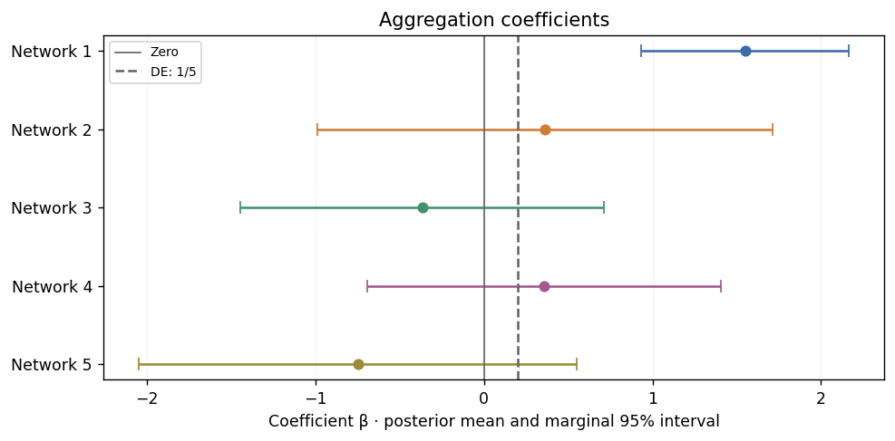
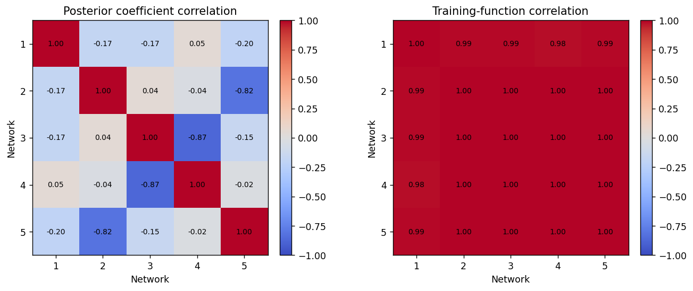
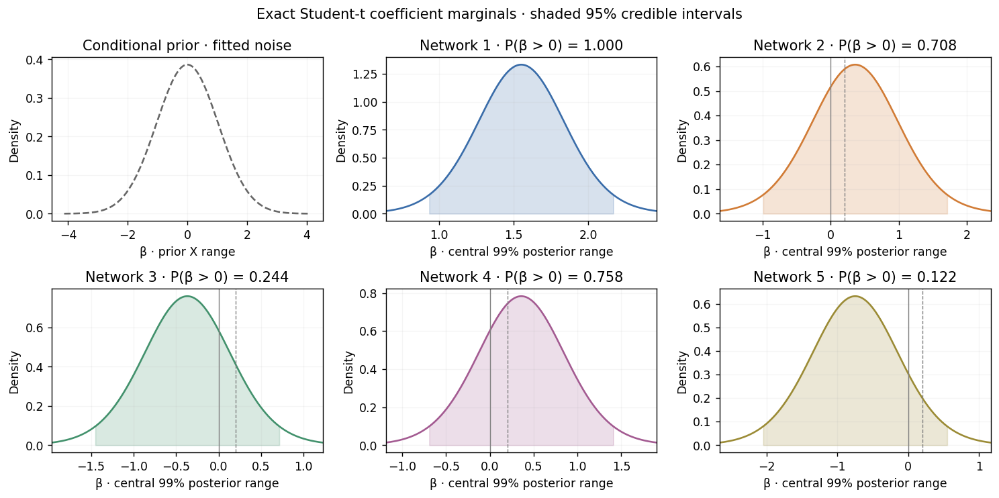
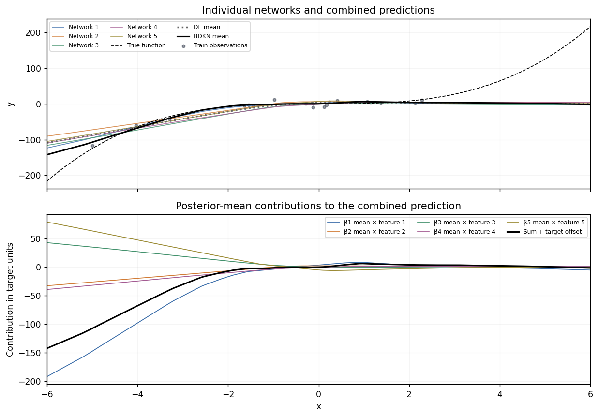
Each density panel uses its own X range for readability; coefficient intervals above share a common axis. Prior reference conditions on fitted noise. Contribution shares use held-out inputs; test targets are used only for scoring.
| Network | β mean | 95% low | 95% high | P(β > 0) | Contribution share | Test RMSE | Test NLL |
|---|---|---|---|---|---|---|---|
| 1 | 1.55007 | 0.93368 | 2.16646 | 0.99998 | 0.44015 | 62.23462 | 11.54016 |
| 2 | 0.36053 | -0.99150 | 1.71257 | 0.70789 | 0.09760 | 62.94127 | 16.44864 |
| 3 | -0.36722 | -1.44885 | 0.71442 | 0.24350 | 0.12235 | 63.69440 | 10.77822 |
| 4 | 0.35904 | -0.69021 | 1.40830 | 0.75820 | 0.11896 | 60.96650 | 38.53689 |
| 5 | -0.74827 | -2.04689 | 0.55035 | 0.12171 | 0.22093 | 62.78179 | 21.48273 |